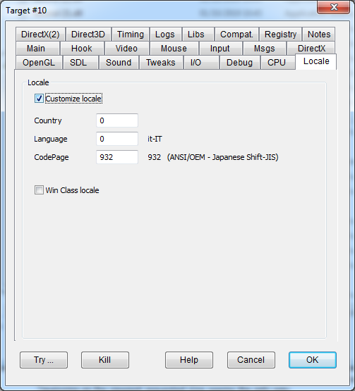

|
Hook Locale |
HOOKLOCALE |
Enables locale API hooking. |
|
Country |
Placeholder for country id. Currently unused. For a list of Country Ids see WinNls.h. |
|
|
Language |
System Language id. DxWnd pretends that the program is running in the context of the selected language. For a list of valid Language ids refer to here. |
|
|
CodePage |
CodePage id. DxWnd pretends that the program is running in the context of the selected CodePage. For a list of CodePage ids supported in the current machine use the CodePage.exe tool or refer to here. |
|
|
Win class locale glPixelZoom args |
CLASSLOCALE |
This flag enables CodePage transformation on window class data. Depending on the situation, it may result better to set this flag rather than not. It impacts essentially on the program's window title bar. |